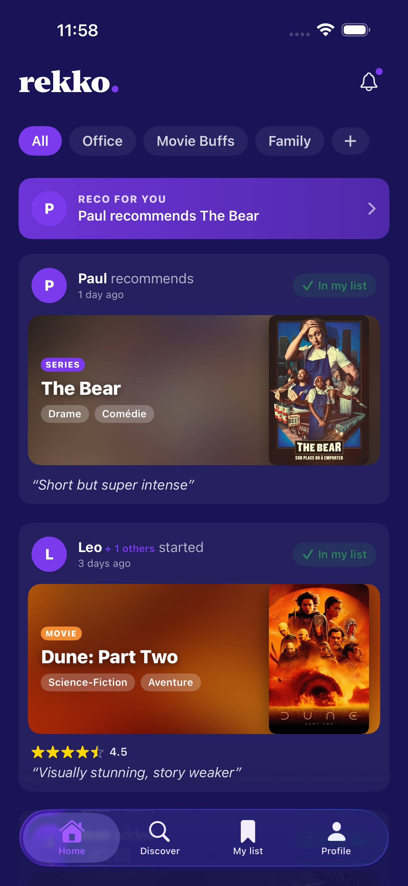
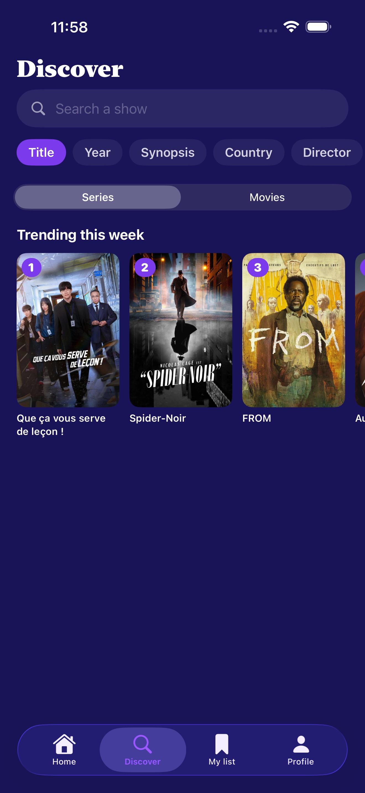
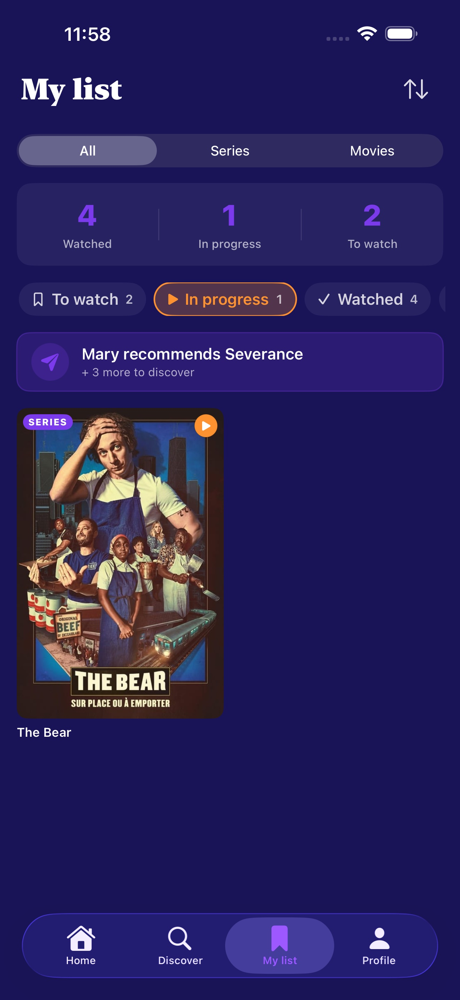
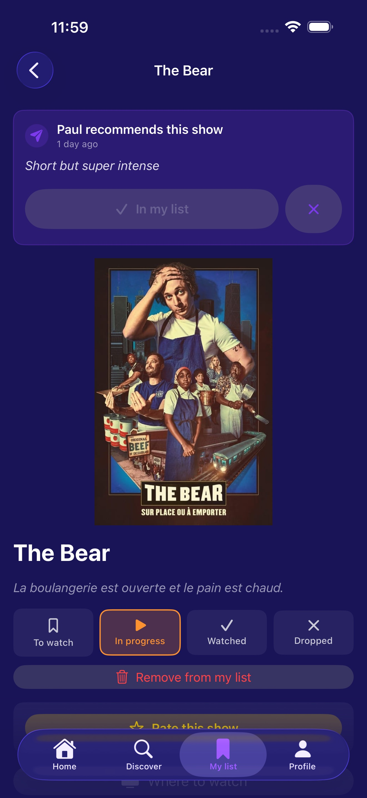
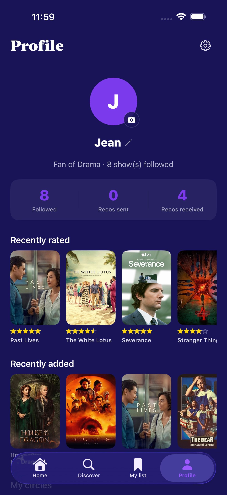
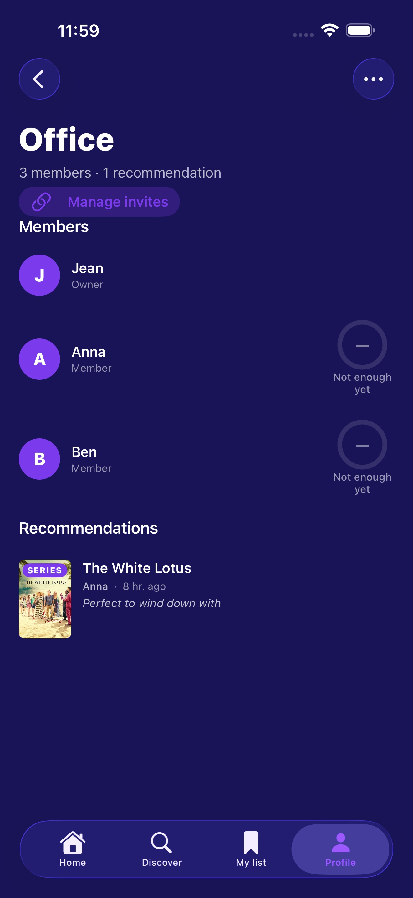

The private, ad-free way to swap TV and movie recommendations with the people you actually watch with. No public feed. No algorithm. Just your circles.
Streaming apps recommend what other people watched. Rekko shows you what your people watched — and what they thought of it.
Create a circle for family, one for movie buffs, one for your work crew. Send a series with a one-line note ("Court mais super intense"). They see it in their feed, add it to their list, and the loop closes — the way it would over dinner.

Every reco, rating and status change from your circles, freshest first. Filter by circle so the office picks don't drown out the family ones, and tap a card to land on the show.

Weekly trending TV and movies from TMDB sit next to a "Most rated in your circle" row — the titles your friends rate over and over. Search across titles, year, synopsis, country or director.

A four-status journal of everything you're following. Rate watched titles with a quick 0–5 stars and a one-line take. Sort by date added, A→Z or rating. The list is yours.

Every show fiche stitches together the TMDB synopsis, your circle's recos and ratings, and a "Where to watch" button that hands off to Apple TV — Apple resolves the streamer for you, no per-provider app to install.

One screen for your avatar and name, a count of what you've watched / are watching / want to watch, and every circle you're a member of. Settings sit one tap away: export your data (RGPD), delete your account, manage the image cache.

A circle is a CloudKit share — invitees are gated by iCloud, the data lives in your iCloud account, and there's nothing to host. See members at a glance, compatibility scores based on shared ratings, and the full activity stream for that group.
Rekko was built around the idea that what you watch is nobody's business but your circle's. There's no server we operate that stores your shows, your ratings or your recos.